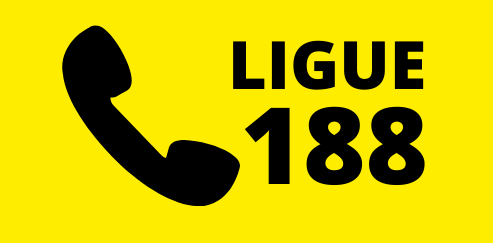
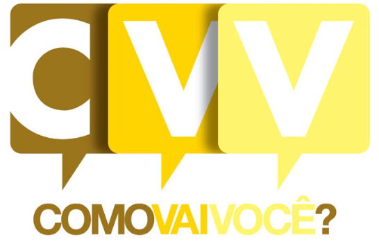

Centro de Valorização da Vida (CVV)
CVV é uma associação filantrópica, fundada em 1962 e reconhecida como de Utilidade Pública Federal desde 1973. A associação tem o intuito de prestar serviços voluntários como, apoio emocional e prevenção ao suicídio para todas as pessoas que querem e precisam conversar, sob total sigilo e anonimato.
Os contatos com o CVV são feitos pelos telefones 188 (24 horas e sem custo de ligação), pessoalmente (nos 110 postos de atendimento) ou pelo site www.cvv.org.br, por chat e e-mail. Nestes canais, são realizados mais de 2 milhões de atendimentos anuais, por aproximadamente 3.400 voluntários, localizados em 24 estados mais o Distrito Federal.
A linha 188 começou a funcionar no Rio Grande do Sul e, em setembro de 2017, iniciou sua expansão para todo o Brasil, com a integração de todos os estados.
Além dos atendimentos, o CVV desenvolve, em todo o país, outras atividades relacionadas a apoio emocional, com ações abertas à comunidade que estimulam o autoconhecimento e melhor convivência em grupo e consigo mesmo. A instituição também mantém o Hospital Francisca Julia que atende pessoas com transtornos mentais e dependência química em São José dos Campos-SP.
{kind=link}
Todas as formas de acesso podem ser conferidas no site www.cvv.org.br, onde também é possível se informar sobre como se tornar voluntário.